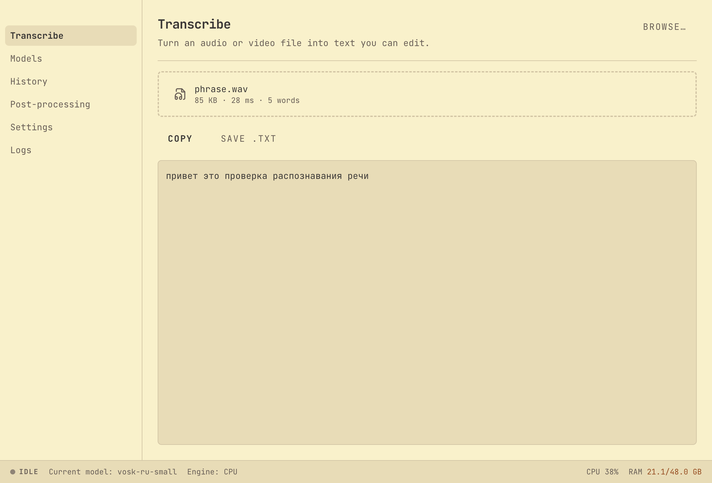
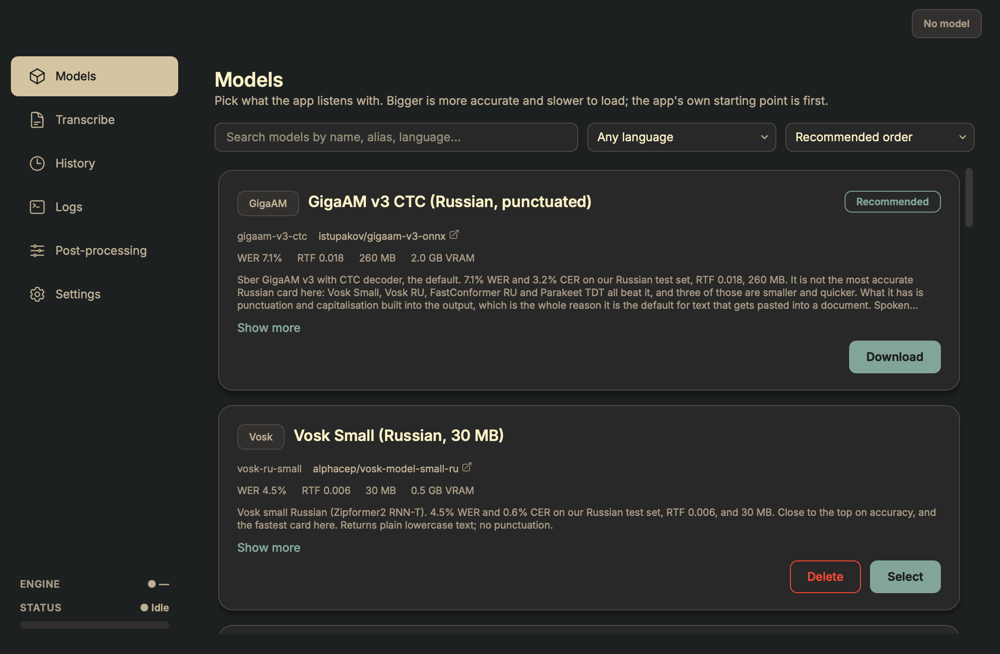
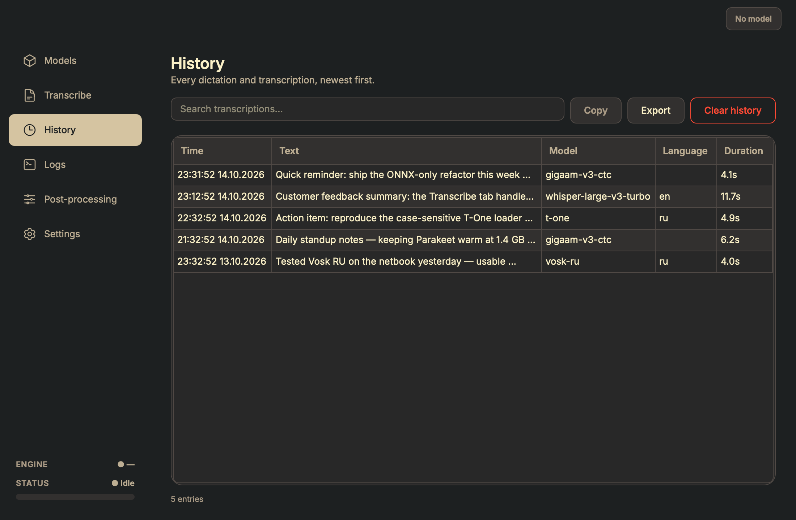
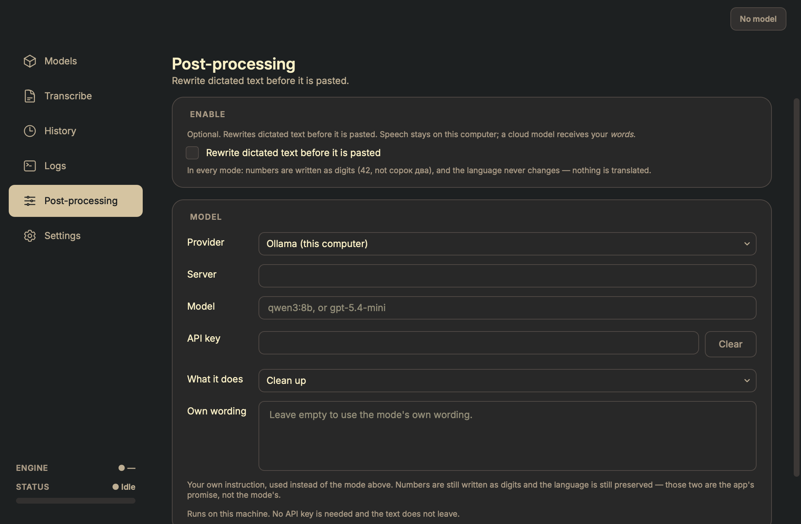
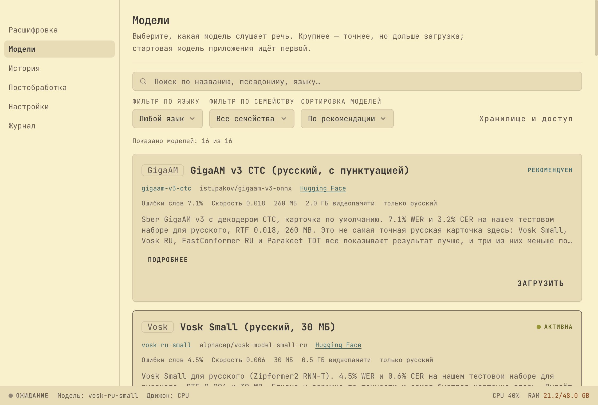

Transcribe files
Drop a WAV, FLAC, OGG, OPUS or AIFF file on the window. MP3, M4A, MP4, MOV, MKV and WebM go through a bundled ffmpeg, so nothing else needs installing. The transcript is editable before you copy it.
Lazy to Text listens on a global hotkey, transcribes on your computer with ONNX Runtime, and pastes the result into the window you were typing in. Audio never leaves the machine. The network is used to download a model, and, only if you turn on post-processing with a cloud provider, to send the text to it.
MIT licence. Windows x64, macOS on Apple silicon and Linux x64.
Отправь Анне черновик к пятнице и поправь вторую главу.
Ctrl+F2 starts a recording on Windows and Linux, Ctrl+F8 on macOS. Ctrl+F3 or Ctrl+F9 stops it and transcribes. Ctrl+F6 or Ctrl+F10 cancels. All three can be changed in Settings, with a field that records the keys you press.
A model on your computer recognises the speech. The app uses CoreML on Apple silicon and the CPU elsewhere, falling back to the CPU when CoreML cannot run a model.
The text goes to the clipboard and into the window that had focus, with one paste keystroke. A small capsule at the bottom of the screen shows that the app is listening, then what happened to your words: pasted, copied or failed.
The recording, the models, the hotkeys and your history belong to the engine, a headless Python runtime the app starts and keeps alive. The window is the Monos interface, built with Electron.
Built on the Monos kit: warm paper, one corner radius and six palettes in light and dark. It runs on Windows, macOS and Linux, with search and filters on Models and History, a drop zone that covers the whole window, undo for a deleted history entry, and a hotkey field that listens for the keys.
The original Qt window is gone and the CUDA build with it. Your settings, history and downloaded models are kept: the engine reads the same folders. On Windows the installer offers to remove a classic install. The downloadable macOS build is signed ad hoc, so macOS asks for the Microphone and Accessibility permissions again.

These screenshots are taken from the app, talking to its real engine. The sidebar lists Transcribe, Models, History, Post-processing, Settings and Logs, and Ctrl+1 to Ctrl+6 switch between them.

Every model is an ONNX export loaded by the same backend and run by the same ONNX Runtime. There is no PyTorch, NeMo or CTranslate2 in the dependency tree, so the install stays the same size whichever model you pick.
The accuracy and speed columns are our own measurements: 400 clips from the Golos test split, run on the CPU. Spoken numbers are scored separately, because the corpus spells them out and the models write digits. On 1554 reference words the 95% confidence interval is roughly ±1 to 1.8 points, so a gap under about 2 points is a tie.
| Model | WER | RTF | Size | Languages |
|---|---|---|---|---|
gigaam-v2 | 3.5% | 0.015 | 889 MB | RU only |
vosk-ru-small | 4.5% | 0.006 | 30 MB | RU only |
gigaam-multilingual-large-ctc | 4.6% | 0.028 | 564 MB | ru/kk/ky/uz/en |
vosk-ru | 4.7% | 0.007 | 50 MB | RU only |
fastconformer-ru | 4.9% | 0.009 | 137 MB | RU only |
parakeet-tdt-v3 | 5.0% | 0.020 | 1.2 GB | 25 languages |
gigaam-multilingual-ctc | 6.2% | 0.026 | 225 MB | ru/kk/ky/uz/en |
gigaam-v3-ctc (default) | 7.1% | 0.018 | 260 MB | RU only |
gigaam-v3-rnnt | 7.4% | 0.012 | 290 MB | RU only |
t-one | 10.8% | 0.030 | 290 MB | RU only |
canary-1b-v2 | 11.4% | 0.059 | 2.0 GB | 25 languages |
whisper-large-v3-turbo | 16.2% | 0.457 | 1.6 GB | multilingual |
whisper-base | 55.6% | 0.039 | 107 MB | multilingual |
parakeet-ctc-0.6b | 122.8% | 0.019 | 623 MB | EN only |
parakeet-tdt-v2 | 124.4% | 0.020 | 2.3 GB | EN only |
parakeet-rnnt-0.6b | 126.3% | 0.022 | 631 MB | EN only |
WER is word error rate and RTF is the real-time factor: processing seconds per second of audio on the CPU. Lower is better for both. Sorted by WER.
Drop a WAV, FLAC, OGG, OPUS or AIFF file on the window. MP3, M4A, MP4, MOV, MKV and WebM go through a bundled ffmpeg, so nothing else needs installing. The transcript is editable before you copy it.
Up to 1,000 dictations are kept on this computer. Search them, open one to read the full text, copy it in one click, delete it with an undo, or export the list as plain text.
Lines are colour-coded by level and source. Messages meant for you are told apart from bookkeeping, and network lines are hidden until you ask for them.

After recognition, a language model can rewrite the text before it is pasted: clean it up, make it concise, or turn it into formal prose. You can also write your own instruction. Numbers come out as digits, and the language never changes.
Speech is always recognised on your computer. A cloud provider receives the words the model produced, so that choice is yours to make. If the model cannot answer, the raw transcription is pasted and the reason goes to the log.
Three settings keep it quick: how hard a reasoning model thinks before it answers, a cap on the length of the reply, and a timeout. Each preset has its own.

The interface switches language live, from Settings, without a restart. Light, dark or the system theme, and one of six palettes, change with it. The window can go down to 900 by 600.

Download the build for your system from the latest release. The sizes are on the release page next to each file.
| Platform | Asset |
|---|---|
| Windows | LazyToText-Desktop-<version>-setup-x64.exe and a portable LazyToText-Desktop-<version>-portable-x64.exe |
| macOS | LazyToText-Desktop-<version>-mac-arm64.dmg and .zip, Apple silicon |
| Linux | LazyToText-Desktop-<version>-linux-x86_64.AppImage and …-linux-amd64.deb, x64 |
The installer and the portable build contain the same app. Use the portable one where you cannot run an installer. The installers are not signed with a paid certificate, so SmartScreen calls them unrecognized: choose More info, then Run anyway. Why, and what to do.
The first launch needs two permissions: Accessibility for the global hotkeys and the paste keystroke, and Microphone for recording. macOS never asks for the first by itself, so Settings links to the right pane. The downloadable build is signed ad hoc and is not notarized, so the first launch is blocked: open System Settings, Privacy & Security, and choose Open Anyway. Expect macOS to ask for both permissions again after each update. Why, and what to do. A build you make yourself with the self-signed certificate from scripts/setup-signing.sh keeps them.
Linux has no signing gate, so no warning about the publisher. Global hotkeys and the paste keystroke work under X11. Wayland does not let an application listen for keys it does not own, so there the hotkeys depend on your compositor. AppImage and .deb notes.
Clone the repository, run uv sync --frozen, then, from the desktop folder, npm install and npm run dev. The Python runtime alone starts with uv run lazy-to-text-server.